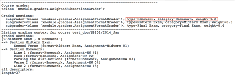
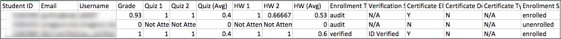
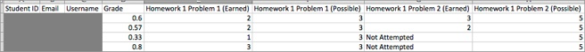
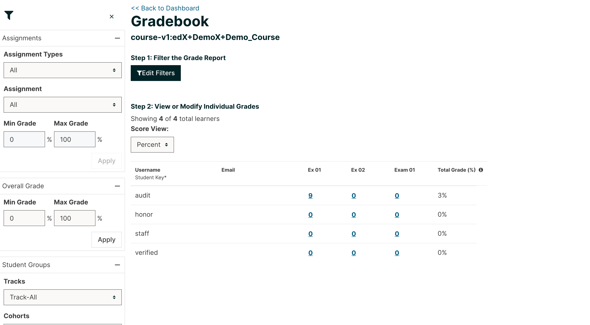
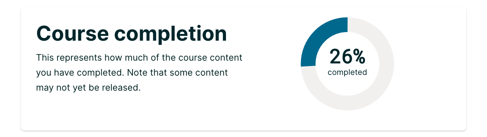
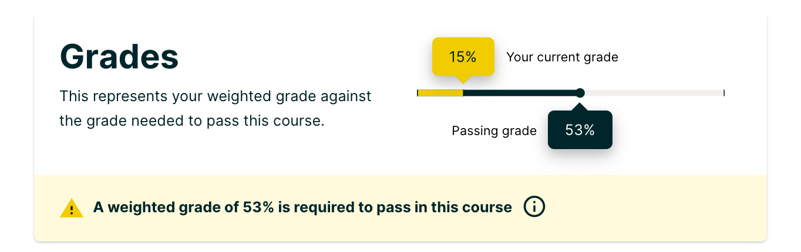
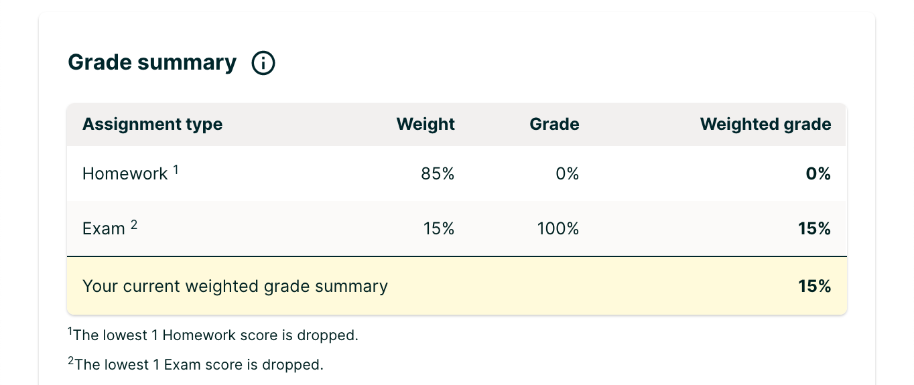
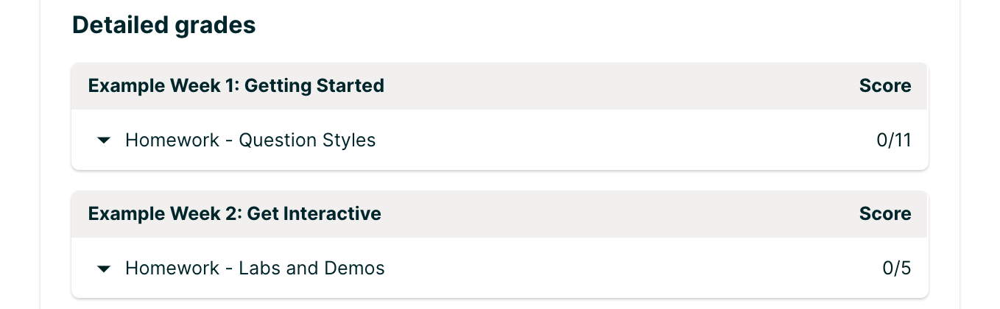
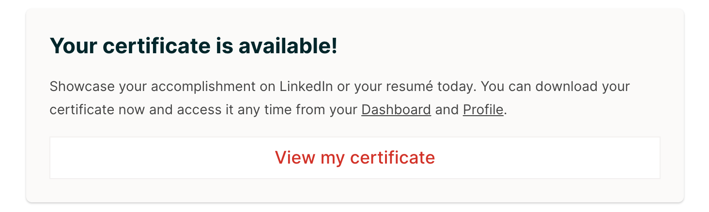
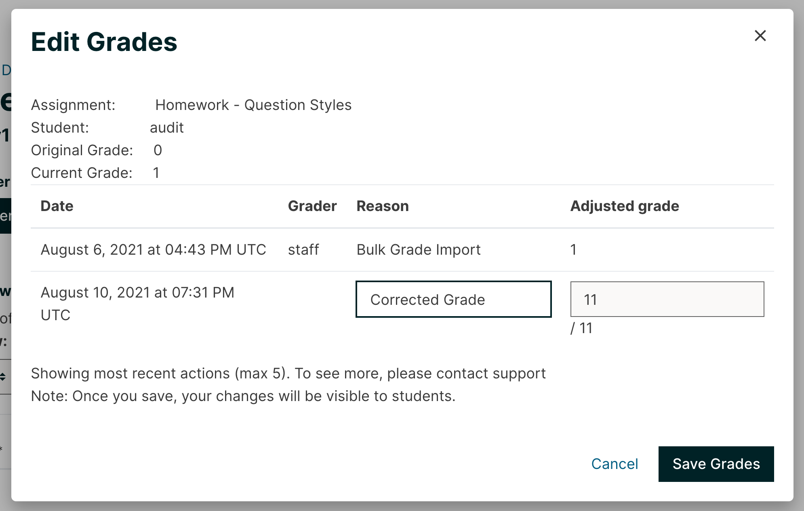

18.3. Learner Grades and Grading#
You can review information about how grading is configured for your course, and access learner grades, at any time after you create the course. You can also make adjustments to learner grading for a problem, for a single learner or all learners. For information about the grading data that you can access and the changes you can make, see the following topics.
To review learner answers to course problems, you can check the answer submissions for a specific problem, either for a selected learner or for all learners. You can also review answer distribution data for all of the problems. See Answer Data.
For open response assessments, you can generate an ORA data report that provides details of each learner’s response and of assessments that were performed on each response. For details, see Generate a Report for ORA Assignments.
For information about how you establish a grading policy and work with the Problem components in your course, see Establishing a Grading Policy For Your Course or Working with Problem Components.
18.3.1. Review How Grading Is Configured for Your Course#
You can review the assignment types that are graded and their respective weights in the LMS by selecting Instructor to access the instructor dashboard.
You establish a grading policy for your course when you create it in Studio. While the course is running, you can view an XML representation of the assignment types in your course and how they are weighted to determine learners’ grades.
View the live version of your course.
Select Instructor, and then select Data Download > Grading Configuration.
A list of the assignment types in your course displays. In this example, Homework is weighted as 0.3 (30%) of the grade.
In Studio, you define this information by selecting Settings and then Grading. For more information, see Configure the Assignment Types.

Important
Any changes that you make to the course grading policy, to graded subsections, or to graded components after the course begins will affect learners’ grades and their experience in the course as well as analysis of course data.
EdX recommends that you announce any unavoidable grading related changes to learners by using, for example, updates on the Course page. You should also carefully track such changes for researchers.
18.3.2. Generate a Grade Report for All Learners in a Course#
For any course, you can generate grades and then download a file with the results for all learners in the course, including unenrolled learners. EdX recommends that you generate a grade report as soon as certificates have been issued for your course.
When you initiate calculations to grade learner work, a process starts on the edX servers. The complexity of your grading configuration and the number of learners in your course affect how long this process takes. You can download a report of the calculated grades in a comma-separated values (.csv) file when the grading process is complete.
You also have the option to review learner grades on the instructor dashboard. For more information, see Review Learner Grades on the Instructor Dashboard.
To generate and download the grade report for the learners in your course, follow these steps.
Important
Because the grade report file contains confidential, personally identifiable data, be sure to follow your institution’s data stewardship policies when you open or save this file.
View the live version of your course.
Select Instructor, and then select Data Download.
To start the grading process, select Generate Grade Report.
A status message indicates that the grading process is in progress. This process can take some time to complete, but you can navigate away from this page and do other work while it runs.
To check the progress of the grading process, reload the page in your browser and scroll down to the Pending Tasks section. The status of active tasks is shown in the table.
When the report is complete, a linked .csv file name becomes available above the Pending Tasks section. File names are in the format
{course_id}_grade_report_{datetime}.csv. The most recently generated reports appear at the top of the list.To open or save a grade report file, locate and select the link for the grade report you requested.
You can open .csv files in a spreadsheet application to sort, graph, and compare data.
Note
To prevent the accidental distribution of learner data, you can download grade report files only by selecting the links on this page. Do not copy these links for reuse elsewhere, as they expire within 5 minutes. The links on this page also expire if the page is open for more than 5 minutes. If necessary, refresh the page to generate new links.
18.3.2.1. Interpreting the Grade Report#
A grade report for your course is a time-stamped .csv file that identifies each learner by ID, email address, and username, and provides a snapshot of their cumulative course scores.
Scores in the grade report are presented by assignment. There is a column for every assignment that is included in your grading configuration: each homework, lab, midterm, final, and any other assignment type you added to your course.
Note
The grade report does not include information about individual problems within assignments, or include learner answer distributions. For a report that shows problem-level information, see Generate a Problem Grade Report for All Learners in a Course.
The report indicates the enrollment track for each learner. For professional and verified track learners it also shows whether they have verified their identity. The report shows whether each learner is eligible to receive a certificate (determined by whether he has earned a passing grade at the time the report was requested), whether a certificate has been generated, and the type of certificate earned.
If your course includes cohorts, content experiments, or teams, the grade report includes additional columns indicating the name of the cohort, experiment group, or team that each learner belongs to.
The grade report .csv file contains one row of data for each learner, and columns that provide the following information.
Learner identifiers, including an internal Student ID, Email address, and Username.
The overall Grade, with the total score a learner has currently attained in the course. This value is expressed as a decimal: a learner with a grade of 0.65 has earned 65% of the credit in the course, and a learner with a grade of 1 has earned 100%.
Each {assignment type} {number} defined in your grading configuration, with the score that the learner attained for that specific assignment. For example, column Homework 3 shows the scores for the third homework assignment. If the learner did not attempt the assignment, the value is “Not Attempted”. If the assignment was not available for the learner, the value is “Not Available”.
An {assignment type} (Avg) with each learner’s current average score for that assignment type: for example, “Homework (Avg)”. This column is not included if a particular assignment type has only one assignment.
This assignment type average takes both dropped assignments and the assignment weight into account. For example, if the course includes five homework assignments and the course grading policy allows one homework assignment with the lowest score to be dropped, the homework assignment average in this grade report is calculated over four homework assignments rather than five. This average is then multiplied by the assignment weight to calculate the assignment type average.
If cohorts are used in the course, a Cohort Name column indicates the name of the cohort that each learner belongs to, including the default cohort. The column is empty for learners who are not yet assigned to a cohort.
If content experiments are used in the course, an Experiment Group column indicates the name of the experiment group that each learner belongs to within a group configuration. The column heading includes the name of the group configuration. The column is empty for learners who are not assigned to an experiment group. If you have more than one experiment group configuration in your course, you see one column for each group configuration.
If teams are enabled in the course, a Team Name column indicates the name of the team that each learner belongs to. The column is empty for learners who have not joined a team.
The Enrollment Track column indicates whether each learner is enrolled in the course in the honor code, verified, or professional education track.
The Verification Status column indicates whether learners who are enrolled in course tracks that require ID verification have successfully verified their identities to edX by submitting an official photo ID via webcam. The value in this column is “N/A” for learners enrolled in course tracks that do not require ID verification, such as “Audit”.
A value of “Not ID Verified” in this column indicates that the learner is enrolled in a course mode that requires ID verification, such as “Verified”, but she has not attempted ID verification, or her ID verification has failed or expired. A value of “ID Verified” indicates that the learner is enrolled in a course mode that requires ID verification, and her ID verification is current and valid.
The Certificate Eligible column indicates whether a learner is eligible for a certificate for your course.
The value in this column is “Y” for the following learners.
Verified learners who attained a passing grade before this report was requested. For example, the learner could have earned a passing grade in an earlier session, or run, of the course.
All whitelisted learners, regardless of grade or enrollment track.
The value is “N” for the following learners.
Learners who did not attain a passing grade.
Learners who are in the audit track.
Learners who live in embargoed countries.
For learners who are eligible to receive a certificate, the Certificate Delivered column has a value of “Y” when the certificates for a course have been generated. The value is “N” for learners who are not eligible to receive a certificate.
The Certificate Type column indicates the type of certificate that the learner is eligible for, such as “honor” or “verified”. If a learner is not eligible for a certificate, or if the certificates for a course have not yet been generated, the value in this column is “N/A”.
The Enrollment Status column indicates whether the learner is currently enrolled or unenrolled in the course.
18.3.3. Generate a Problem Grade Report for All Learners in a Course#
For any course, you can calculate grades for problems and generate a report that can be downloaded. The problem grade report for a course shows the number of points that each learner has earned for each problem, and the number of possible points for every problem in the course. In addition, the report shows the final grade score for each learner.
To generate and download the problem grade report for all learners who have ever enrolled in your course, follow these steps.
Important
Because the problem grade report file contains confidential, personally identifiable data, be sure to follow your institution’s data stewardship policies when you open or save this file.
View the live version of your course.
Select Instructor, and then select Data Download.
To start the problem grading process, select Generate Problem Grade Report.
A status message indicates that the problem grading process is in progress. This process can take some time to complete, but you can navigate away from this page and do other work while it runs.
To check the progress of the problem grading process, reload the page in your browser and scroll down to the Pending Tasks section. The status of active tasks is shown in the table.
When the report is complete, a linked .csv file name becomes available above the Pending Tasks section. File names are in the format
{course_id}_problem_grade_report_{datetime}.csv. The most recently generated reports appear at the top of the list.To open or save a problem grade report file, locate and select the link for the problem grade report you requested.
You can open .csv files in a spreadsheet application to sort, graph, and compare data.
Note
To prevent the accidental distribution of learner data, you can download problem grade report files only by selecting the links on this page. Do not copy these links for reuse elsewhere, as they expire within 5 minutes. The links on this page also expire if the page is open for more than 5 minutes. If necessary, refresh the page to generate new links.
18.3.3.1. Interpreting the Problem Grade Report#
A problem grade report for your course is a time-stamped .csv file that identifies each learner by ID, email address, and username, and provides a snapshot of earned scores compared with the possible scores for each problem.
The problem grade report includes two columns for every problem that is included in your grading configuration. For each homework, lab, midterm, or final exam problem, there is one column for earned points, and one column for possible points. In addition, the report shows the final grade score for each learner, expressed as a decimal.
The .csv file contains one row of data for each learner, and columns that provide the following information.
Learner identifiers, including an internal Student ID, Email address, and Username.
The Grade column shows the total score that a learner has currently attained in the course. This value is expressed as a decimal: a learner with a grade of 0.65 has earned 65% of the credit in the course, and a learner with a grade of 1 has earned 100%.
For each problem (identified by assignment, subsection, and problem name), a column showing the number of points actually earned by each learner. If the learner did not attempt the assignment, the value is “Not Attempted”. If the assignment is not available to the learner, the value in this column is “Not Available”.
For each problem (identified by assignment, subsection, and problem name), a column showing the number of points that it is possible to earn for the problem. If the assignment is not available to the learner, the value in this column is “Not Available”.
18.3.4. Review Learner Grades on the Instructor Dashboard#
You can review a gradebook for a course on the instructor dashboard. To review grades for a course, follow these steps.
View the live version of your course.
Select Instructor, and then select Student Admin.
Select View Gradebook. Grades are calculated and the Gradebook displays.

The gradebook displays a table, with a row for each learner (*see note) enrolled in the course, listed by user name, and a column for each assignment in the course.
Note
By default, the gradebook will not include any user enrolled in the course who also has a “Course Access Role”. This includes course staff, course administrators, course data researchers, and beta testers. To see a listing of users who fall into this category, navigate to the Insurector Dashboard and refer to the Course Team Management section of the Membership tab.
The gradebook includes the following features:
Filtering: There are several options for filtering the data shown on the gradebook.
Assignment Type: only show grades for a certain Assignment Type.
Assignment: only show grades for a single Assignment.
Assignemnt Grade: when filtering by Assignment, only show users with a grade for that assignment within a certain range.
Overall Grade: only show learners whose total course grade is within a certain range.
Track: only show learners of a certain enrollment mode (e.g. verified, audit, masters).
Cohort: only show learners in a certain cohort.
Include Course Team Members: By default, users with certain course roles (Staff, Admin, Beta Tester, Course Data Researcher) will be excluded from gradebook results. To include those users, you can select this option, which will include those excluded users in the gradebook.
Searching: You can search for individual learners by their username, using the search field. Searches are case-insensitive.
Grade Override: You can override the grade that a learner has received for a specific graded subsection. For information about how to do this, see Override a Learner’s Subsection Score Using the Instructor Dashboard Gradebook.
Master’s courses: The edX gradebook has several features for high-touch courses. For learners in the Master’s track:
You can search by email or university student key.
You can override grades in bulk. For more information, see Override Learner Subsection Scores in Bulk.
You can download and view a detailed per-learner report for tracking learner progress and planning learning interventions. For more information, see Per-Learner Interventions Report.
18.3.5. Override Learner Subsection Scores in Bulk#
Note
Master’s-only feature
This feature is available in courses with a Master’s track, to support bulk grade adjustments or curving. It allows you to override subsection (i.e. assignment or exam) grades for in bulk by uploading a file.
Note
Grade overrides apply to all learners enrolled in supported courses. There is a size limit of 4MB (~10k learners) for uploaded files. If your Master’s track course is bigger than this, you’ll have to upload grading files in chunks.
To override grades in bulk, follow these steps.
View the live version of your course.
Select Instructor, and then select Student Admin.
Select View Gradebook.
Set up the filters to identify the segment of learners you want to grade.
Click the Download Grades button to download a CSV of subsection assignment grades for learners matching the currently specified filters.
The CSV contains one row per learner, and the following columns:
username: The user’s edX username
student_key: The user’s external university ID, if configured
course_id: The course ID
track: The user’s enrollment track (e.g. audit, verified, etc.)
cohort: The user’s assigned cohort, if any
In addition, there are five columns per graded subsection. <id> is a unique internal identifier for each graded subsection.
name-<id>: The name of the subsection
grade-<id>: The “effective” grade for the subsection. This is equal to the override grade if there is an override, otherwise it is equal to the “original grade”
original_grade-<id>: The grade that the user earned through answering problems and being scored through the LMS
previous_override-<id>: The overridden grade (if any) that the learner has received through gradebook grade overrides
new_override-<id>: This column will always be blank. This is where you will enter the user’s new grade for the subsection
Fill in the points to award in the new_override column for the assignment(s) you want to override grades for and save the file.
Return to the Gradebook and click the Import Grades button.
Select your updated grades file and click Open.
The Gradebook will process your file, update learner grades, and provide a summary of grades updated and any errors.
It can take several minutes for the file upload to complete and grades to be fully updated.
You can find a history of files uploaded and summary of results by clicking the View Bulk Management History link at the top of the page.
18.3.6. Per-Learner Interventions Report#
Note
Master’s-only feature
This feature is available in courses with a Master’s track, to support manual learning interventions. It allows you to export per-learner progress and grade information for Master’s track learners, and enables you to identify and reach out to learners who may need additional help.
To download and view the interventions report, follow these steps:
View the live version of your course.
Select Instructor, and then select Student Admin.
Select View Gradebook.
Set up the filters to identify the segment of learners you want to view
Click the Download Interventions button to download a CSV report of progress and grades information for these learners.
The report file contains per-learner information for learners in the Master’s track, including:
edX user ID
edX username
Student Key
Email
Full Name
Course ID
Cohort
Activity in this course – number of videos, problems, and discussion forum posts submitted over the last week and overall in this course
Assignment grades
Letter Course Grade
Numeric Course Grade to-date
Learner data is updated every day to include activity through the end of the previous day (23:59 UTC).
18.3.7. Check the Progress of a Specific Learner#
To check a single learner’s progress in your course, you can review the data in the grade report or problem grade report, or review the learner’s Progress page.
The Progress page includes a variety of features which allow learners to gauge their performance in a course. The main features of the Progress page are:
the Course Completion chart, which represents all course content completed, both graded and ungraded,
the Grades chart, which compares the current weighted grade compared to the grade required to pass the course and receive a certificate,
the Grade Summary table, which lists all assignment types and their weights,
the Detailed Grades display, which lists each graded assignment in the course and the score earned,
and the Certificate Status display, which describes whether the learner has earned a certificate.
18.3.7.1. View a Specific Learner’s Progress Page#
To view a specific learner’s Progress page, you need their email address or username. You can check the progress for learners who are either enrolled in, or who have unenrolled from, the course.
Learners can view their own progress chart and assignment scores when they are logged in to the course.
To view the Progress page for a specific learner, follow these steps.
View the live version of your course.
Next to View this course as, select Specific student.
In the Username or email field that appears, enter the learner’s username or email address, and then press the Enter key on your keyboard.
Select the Progress page.
It is important to keep in mind that some of the performance displays may be impacted by content or grade visibility settings in Studio. The implications of these settings will be discussed in the following section.
18.3.7.2. Understanding the Progress Page#
18.3.7.2.1. Course Completion#
This chart represents how much of the course content learner’s have completed. All units that can be completed are accounted for in this chart, including readings, videos, graded assignments, practice assignments, and assignments with future scheduled release dates.
The Subsection Visibility Setting in Studio impacts what content is represented in the Course Completion chart.
Course content with a Subsection Visibility Setting of “Entirely Hide Subsection” will not appear in the chart.
Course content in self-paced courses with a Subsection Visibility Setting of “Hide content after course end date” will not appear in the chart once the course has ended.
Course content in instructor-paced courses with a Subsection Visibility Setting of “Hide content after due date” will not appear in the chart once the assignment’s due date has passed.

18.3.7.2.2. Grades#
This feature displays the minimum passing grade in the course against the learner’s current grade. The Assessment Visibility Setting in Studio impacts the grade calculation on the Progress page. Different settings determine whether a graded assignment is considered when calculating the grade to display to the learner.
If “Always Show Results” has been selected, the assignment will be factored into this grade.
If “Never Show Results” has been selected, the assignment will not be factored into this grade. This does not change the learner’s grade within Gradebook. This also does not impact the learner’s eligibility for a certificate.
If “Show When Subsection is Past Due” has been selected, the assignment will only be factored into this grade when the assignment due date has passed.
Regardless of which Assessment Visibility Setting is selected, it will not impact the grade within the Gradebook of the Student Admin tab. A learner’s certificate eligibility is based on the grade in the Gradebook.
Additionally, the Grades display includes a description of the grade range set for the course. The default grade range for a course is a binary Pass/Fail. If your course has additional ranges, they will be displayed here.

18.3.7.2.3. Grade Summary#
The Grade Summary table breaks down each assignment type available in the course and the learner’s performance in each type. The grades displayed in this section follow the same calculation criteria as the Grades feature. To recap, an assignment will be factored into this grade calculation if its Assessment Visibility Setting has been set to “Always Show Results” or “Show When Subsection is Past Due”.

18.3.7.2.4. Detailed Grades#
The Detailed Grades section is a list of all graded assignments in a course. Both the overall subsection grade and the individual problem scores are included in this list. Assignments will not appear in this display if any of the following criteria are true:
The assignment has its Subsection Visibility Setting set to “Entirely Hide Subsection”.
The assignment has a future scheduled release date.
The assignment is not graded.

18.3.7.2.5. Certificate Status#
Certificate Status will only be displayed if your course has a certificate option. If your course is eligible, this feature will describe which of the following states the learner is in:
Passing, where the learner has earned the minimum grade required to earn a certificate.
Not passing, where the learner has not earned the minimum grade required to earn a certificate.
Audit learner, where the learner is in an audit track and does not qualify for a certificate.
Certificate not yet available, where the course is instructor-paced, and the certificate will not be available until after the course end date.
ID not verified, where the learner has not completed their ID verification.
Can request certificate, where the learner has earned a certificate, but the certificate has yet to be generated. In this case, the learner can request a certificate.

18.3.8. Grant Due Date Extensions for a Specific Learner#
We’re providing a way to allow extending subsection due dates per individual learner.
This could be used to support special circumstances, personal emergencies, and disabilities accommodations.
Note: This feature currently only extends assignment due dates - it does not cover other due dates - e.g. for Open Response Assessments
18.3.8.1. Instructions#
To extend a deadline for a learner, visit the Extensions tab on the Instructor Dashboard
Look up learner by email address or username
Choose the graded subsection from the dropdown
Enter new due date
Specify the reason for the extension
Click Change due date for student
You can also use this tab to view all deadlines or reset a deadline.
This feature is supported in courses published after June 1, 2019. To enable for an older course, first Publish the course from Studio. If you have questions, please contact your edX Project Coordinator.
18.3.9. Adjust Grades for One or All Learners#
If you modify a problem or its settings after learners have attempted to answer it, we recommend that you rescore the changed problem so that learners’ grades are updated.
You can adjust an individual learner’s score for a problem using either the Staff Debug Info option in the course, the gradebook that you can access from the Student Admin tab of the instructor dashboard in the LMS, or on the Student Admin tab of the instructor dashboard in the LMS. To adjust the scores for all enrolled learners at once, you use the options on the Student Admin tab of the instructor dashboard in the LMS. If you use the options in the instructor dashboard Student Admin tab, you need to obtain the unique location identifier of the problem.
The following sections describe the various ways in which you can adjust learners’ scores when you cannot avoid making a correction or other change to a problem.
18.3.9.1. Override a Learner’s Score for a Problem#
In some cases, you might want to change, or override, the score that Studio has given a learner for a specific problem. For example, you might receive an email message that explains extenuating circumstances for a learner. You can change an individual learner’s score for a problem using either the instructor dashboard Gradebook, the instructor dashboard Student Admin page, or the Staff Debug viewer for the problem.
18.3.9.1.1. Override a Learner’s Subsection Score Using the Instructor Dashboard Gradebook#
To override a learner’s score for a specific subsection by using the instructor dashboard Gradebook, follow these steps.
View the live version of your course in the LMS.
Select Instructor, and then select Student Admin.
Select View Gradebook.
Enter the learner’s user name in the Search field.
Click the score for the assignment that you want to modify. The Edit Grades dialog opens, displaying the assignment name, the learner’s user name, and the current grade for the assignment.
In the Adjusted grade field, enter the new grade for the learner on this assignment and select Save Grade.
18.3.9.1.2. Override a Learner’s Score Using the Instructor Dashboard Student Admin#
To override a learner’s score for a specific problem by using the instructor dashboard Student Admin page, follow these steps.
Obtain the location identifier for the problem that you want to rescore. For more information, see Find the Unique Location Identifier for a Problem.
View the live version of your course in the LMS.
Select Instructor, and then select Student Admin.
Under Adjust a learner’s grade for a specific problem, enter the learner’s email address or username, and then enter the location of the problem in the course. For more information, see Find the Unique Location Identifier for a Problem.
Under Score Override, enter the new score for the problem, and then select Override Learner’s Score.
Note
Make sure that the new score is out of the weighted total points for the problem.
In the confirmation dialog box, select OK for each of the confirmation and status messages.
To view the results of the rescore process, select Show Task Status.
A table displays the status of the override process.
18.3.9.1.3. Override a Learner’s Score Using the Staff Debug Viewer#
To override a learner’s score for a specific problem by using the Staff Debug viewer, follow these steps.
Obtain the username or email address of the learner whose score you want to change.
View the live version of your course.
Select Course and navigate to the component that contains the problem you want.
Display the problem, and then select Staff Debug Info. The Staff Debug viewer opens.
In the Username field, enter the learner’s email address or username.
In the Score (for override only) field, enter the correct score for the learner, and then select Override Score. A message indicates a successful adjustment.
To close the Staff Debug viewer, click on the browser page outside of the viewer.
18.3.9.2. Rescore Learner Submissions for a Problem#
Each problem that you create for your course includes the definition of a correct answer, and might also include a tolerance or acceptable alternatives. If you make a change to the accepted answers for a problem, you can rescore any learner responses that were already submitted.
Note
You can only rescore problems that have a correct answer defined in edX Studio, including CAPA problems and drag and drop problems. This procedure cannot be used to rescore open response assessment (ORA) problems or problems that are scored by an external grader. For ORA problems, you can override a learner assessment grade in Studio.
Additionally, errors might occur if you rescore a problem that has multiple response fields and you have completed any of the following actions.
You removed a response field.
You added a response field.
You reordered any of the response fields.
18.3.9.2.1. Rescore an Individual Learner’s Submission Only if the Score Improves#
This method of rescoring updates a learner’s score only if it improves with the rescoring. If the score is unchanged or might be lower after the rescoring, the learner’s score is not updated.
To rescore a problem for a single learner and update the score only if it improves, follow these steps.
Obtain the username or email address of the learner whose submission you are rescoring.
View the live version of your course.
Select Course and navigate to the component that contains the problem you want to rescore.
Display the problem, and then select Staff Debug Info. The Staff Debug viewer opens.
In the Username field, enter the learner’s email address or username, and then select Rescore Only If Score Improves. A message indicates a successful adjustment.
To close the Staff Debug viewer, click on the browser page outside of the viewer.
Note
You can also rescore an individual’s submission in the Adjust a learner’s grade for a specific problem section on the Student Admin tab of the instructor dashboard. To do this, you need to obtain the location ID of the problem as well as the learner’s username or email address.
18.3.9.2.2. Rescore an Individual Learner’s Submission#
Note
Depending on the type of change you made to the problem, this method of rescoring might decrease the learner’s score. To avoid negatively affecting learner scores, you can instead rescore a learner’s submission only if the score improves.
To rescore an individual learner’s submission, follow these steps.
Obtain the username or email address of the learner whose submission you are rescoring.
View the live version of your course.
Select Course and navigate to the component that contains the problem you want to rescore.
Display the problem, and then select Staff Debug Info. The Staff Debug viewer opens.
In the Username field, enter the learner’s email address or username, and then select Rescore Learner’s Submission. A message indicates a successful adjustment.
To close the Staff Debug viewer, click on the browser page outside of the viewer.
Note
You can also rescore an individual’s submission in the Adjust a learner’s grade for a specific problem section on the Student Admin tab of the instructor dashboard. To do this, you need to obtain the location ID of the problem as well as the learner’s username or email address.
18.3.9.2.3. Rescore Submissions for All Learners Only if Scores Improve#
This method of rescoring updates learners’ scores only if they improve with the rescoring. Learners’ scores that are unchanged or lower after the rescoring are not updated.
To rescore a problem for all enrolled learners in your course, and update scores only if they improve, follow these steps.
Obtain the location identifier for the problem that you want to rescore. For information, see Find the Unique Location Identifier for a Problem.
View the live version of your course.
Select Instructor, and then select Student Admin.
In the Adjust all enrolled learners’ grades for a specific problem section of the page, enter the location of the problem, and then select Rescore Only If Scores Improve.
In the confirmation dialog box, select OK for each of the confirmation and status messages.
The rescoring process can take some time to complete for all enrolled learners. You can navigate away from this page and do other work while the process runs in the background.
To view the results of the rescore process, select Show Task Status.
A table displays the status of the rescore process.
18.3.9.2.4. Rescore Submissions for All Learners#
Note
Depending on the type of change you made to the problem, this method of rescoring might decrease learners’ scores. To avoid negatively affecting learners’ scores, you can instead rescore learners’ submissions only if scores improve.
To rescore a problem for all enrolled learners in your course, follow these steps.
Obtain the location identifier for the problem that you want to rescore. For information, see Find the Unique Location Identifier for a Problem.
View the live version of your course.
Select Instructor, and then select Student Admin.
In the Adjust all enrolled learners’ grades for a specific problem section of the page, enter the location of the problem, and then select Rescore All Learners’ Submissions.
In the confirmation dialog box, select OK for each of the confirmation and status messages.
The rescoring process can take some time to complete for all enrolled learners. You can navigate away from this page and do other work while the process runs in the background.
To view the results of the rescore process, select Show Task Status.
A table displays the status of the rescore process.
18.3.9.3. Reset Learner Attempts for a Problem#
When you create a problem, you can limit the number of times that a learner can try to answer that problem correctly. If unexpected issues occur for a problem, you can reset the value for one particular learner’s attempts back to zero so that the learner can begin work over again. If the unexpected behavior affects all of the learners in your course, you can reset the number of attempts for all learners to zero.
Note
You cannot use this method with open response assessment (ORA) problems. To allow a learner to start an ORA problem again and resubmit responses, you must delete the learner’s state.
18.3.9.3.1. Reset Attempts for an Individual Learner#
To reset the number of attempts for a single learner, follow these steps.
Obtain the learner’s username or email address.
View the live version of your course.
Select Course and navigate to the component that contains the problem you want to reset.
Display the problem, and then select Staff Debug Info. The Staff Debug viewer opens.
In the Username field, enter the learner’s email address or username, and then select Reset Learner’s Attempts to Zero. A message indicates a successful adjustment.
To close the Staff Debug viewer, click on the browser page outside of the viewer.
18.3.9.3.2. Reset Attempts for All Learners#
To reset the number of attempts that all enrolled learners have for a problem, follow these steps.
Obtain the location identifier for the problem whose attempts you are resetting. For more information, see Find the Unique Location Identifier for a Problem.
View the live version of your course.
Select Instructor, and then select Student Admin.
To reset the number of attempts for all enrolled learners, you work in the Adjust all enrolled learners’ grades for a specific problem section of the page. Enter the unique problem location, and then select Reset Attempts to Zero.
A dialog opens to indicate that the reset process is in progress. Select OK.
This process can take some time to complete. The process runs in the background, so you can navigate away from this page and do other work while it runs.
To view the results of the reset process, select Show Task Status.
A table displays the status of the reset process for each learner or problem.
Note
You can use a similar procedure to reset problem attempts for a single learner. You work in the Student-Specific Grade Adjustment section of the page to enter both the learner’s email address or username and the unique problem identifier, and then select Reset Student Attempts.
18.3.9.4. Delete a Learner’s State for a Problem#
You can completely delete a learner’s database history, or “state”, for a problem. You can only delete learner state for one learner at a time.
For example, you realize that a problem needs to be rewritten after only a few of your learners have answered it. To resolve this situation, you rewrite the problem and then delete learner state only for the affected learners so that they can try again.
To delete a learner’s entire history for a problem from the database, you need that learner’s username or email address.
Important
Learner state is deleted permanently by this process. This action cannot be undone.
When you delete a learner’s state for an open response assessment (ORA) problem, the learner will have to start the assignment from the beginning, including submitting responses and going through the required assessment steps.
You can use either the Staff Debug Info option or the instructor dashboard to delete learner state.
To use the Staff Debug Info option, follow these steps.
View the live version of your course.
Select Course and navigate to the component that contains the problem.
Display the problem, and then select Staff Debug Info. The Staff Debug viewer opens.
In the Username field, enter the learner’s email address or username, and then select Delete Learner’s State. A message indicates a successful adjustment.
To close the Staff Debug viewer, click on the browser page outside of the viewer.
To use the instructor dashboard, you must first obtain the unique identifier of the problem. See Find the Unique Location Identifier for a Problem.
Select Instructor, and then select Student Admin.
In the Adjust a learner’s grade for a specific problem section of the page, enter both the learner’s email address or username and the unique problem identifier, and then select Delete Learner’s State.
18.3.9.5. Find the Unique Location Identifier for a Problem#
When you create each of the problems for a course, edX assigns a unique location to it. To make grading adjustments for a problem, or to view data about it, you need to specify the problem location.
Location identifiers for problems can be in one of these formats.
location = block-v1:{org}+{course}+{run}+type@problem+block@{id}, for example,location = block-v1:edX+BlendedX+1T2015+type@problem+block@72e0f73cdf5c4d648ebec0022854f18blocation = i4x://{org}/{course}/problem/{id}, for example,location = i4x://edX/edX101/problem/680cc746e8ee473490841334f0235635
Courses created since Fall 2014 typically have usage IDs in the first format, while older courses have usage IDs in the second format.
To find the unique location identifier for a problem, follow these steps.
View the live version of your course.
Select Course, and then navigate to the unit that contains the problem.
Display the problem, and find the Submission History and Staff Debug Info options that appear below it.
Select Staff Debug Info. Information about the problem appears, including its location.
To copy the location of the problem, select the entire value after
location =, right click, and then select Copy.
To close the Staff Debug viewer, click on the browser page outside of the viewer.